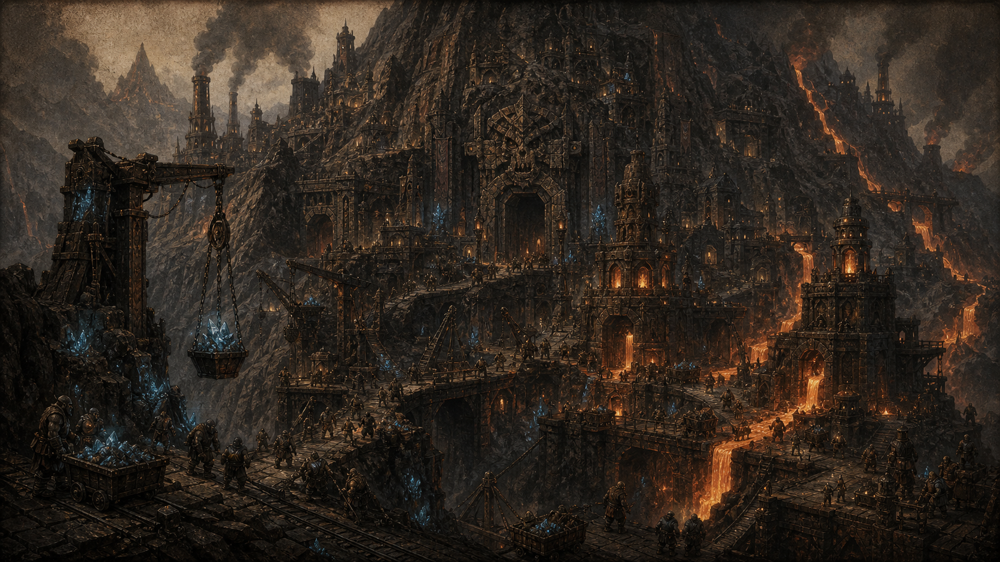
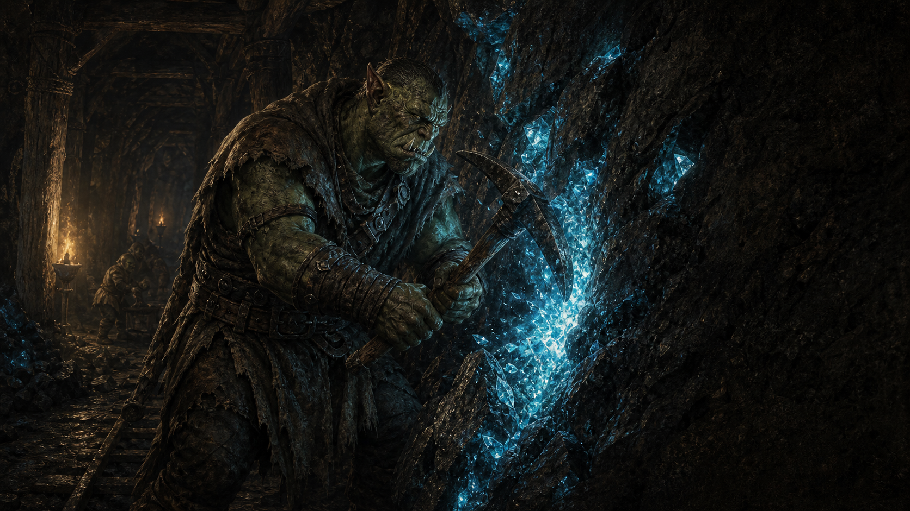
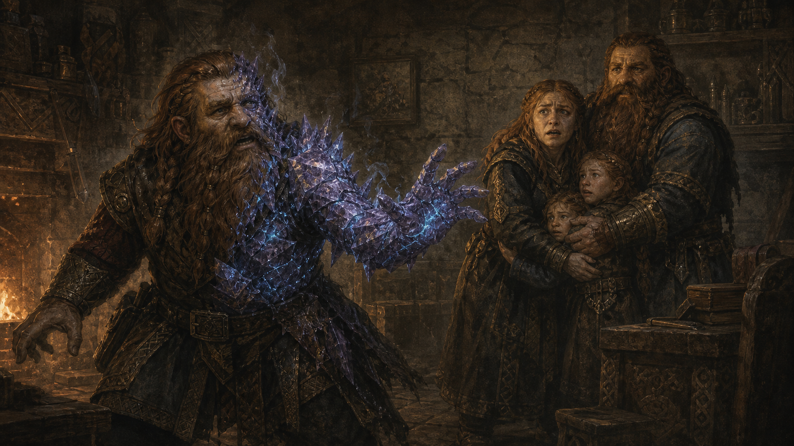

Архив / Хронология
История
Краткий архив эпох: от исчезновения орков до новой тревоги между державами.

Временная шкала

Эпоха Орков
Древняя цивилизация орков создает первые рудные комплексы, язык Кхарак и инженерные традиции, которые современные народы до конца не понимают. Их города были не просто поселениями, а шахтами, кузницами и храмами руды одновременно.

Открытие руды
Руда перестает быть странным минералом и становится источником магии, власти, лечения, оружия и будущих войн. Первый удар кирки по светящейся жиле меняет историю сильнее любой коронации.

Возникновение трёх держав
Велтир, Маркор и Элидор превращают разные ответы на один ресурс в три политические философии: порядок, сделка и знание. Велтир отвечает армией и красной дисциплиной, Маркор — войной картелей на рынке, Элидор — холодной иерархией полезности для науки.

Великая эпидемия
Эксперименты с эссенцией и телом приводят к появлению заражённых и страху перед школами, которые меняют саму природу жизни. Для хроник это катастрофа; для семей — момент, когда близкий человек впервые становится чужим.

Современность
Мир красив, богат и тревожен. Торговля продолжается, договоры еще держатся, но каждая держава готовится к моменту, когда старый баланс рухнет.
Наследие
Главное наследие древности - не руины, а привычка искать власть в земле, слове и формуле. Именно поэтому история мира не закончилась с исчезновением орков.
Современность
Современная эпоха держится на торговле, страхе и временных договорах. Все три державы говорят о мире, но каждая готовит аргументы на случай войны.